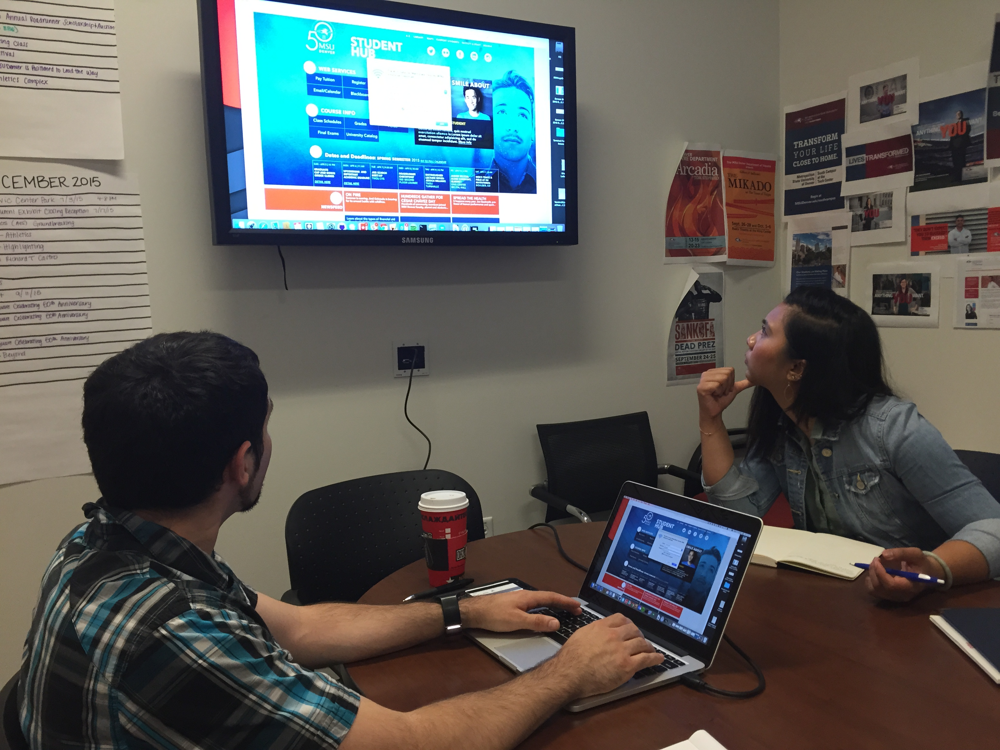
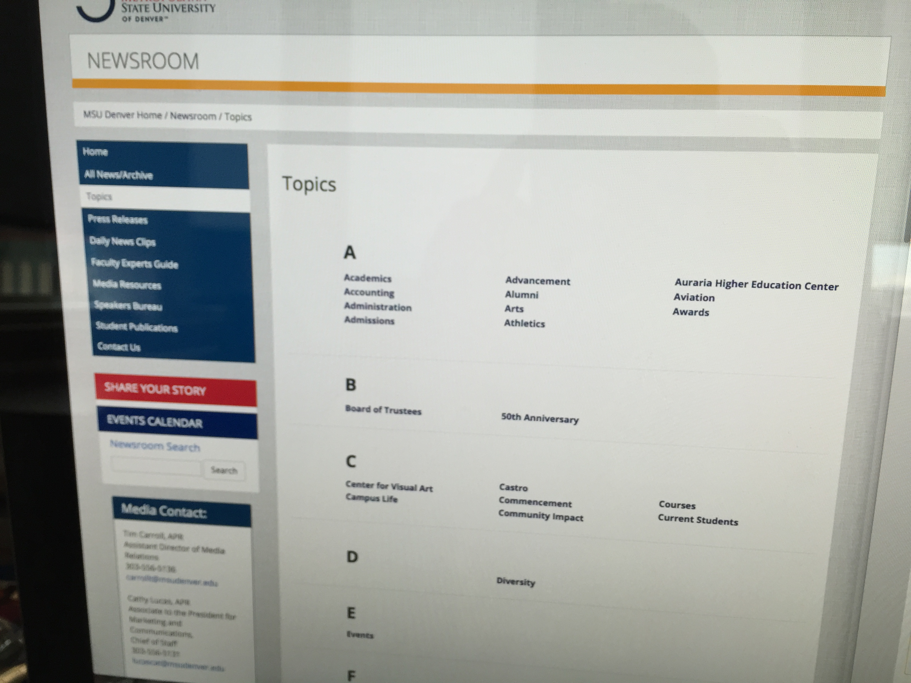
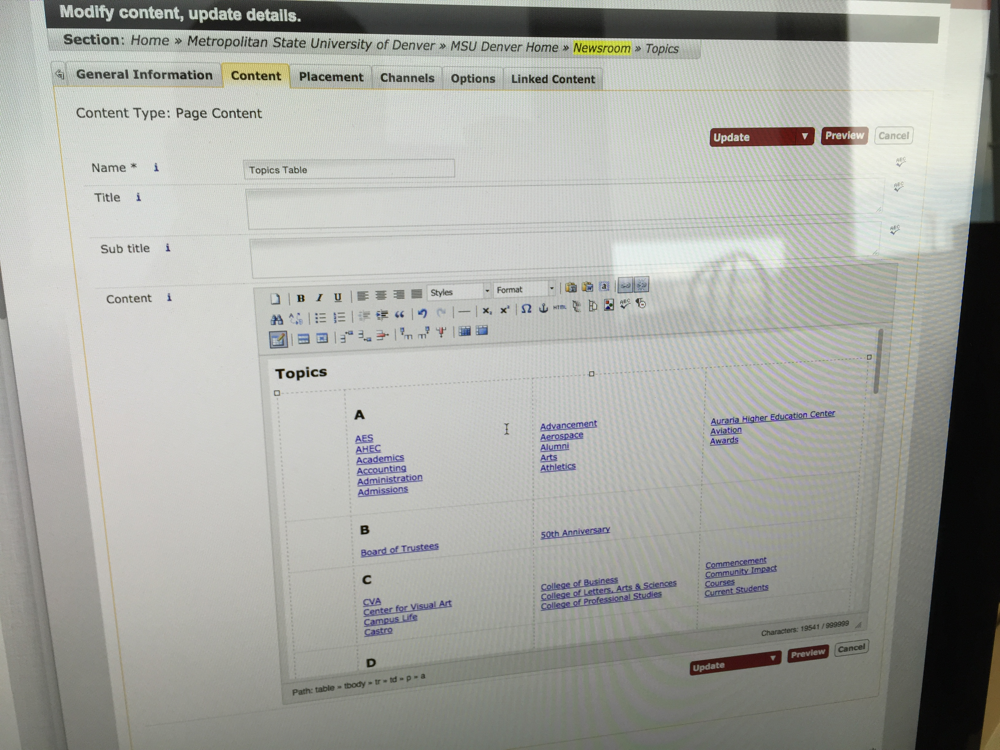
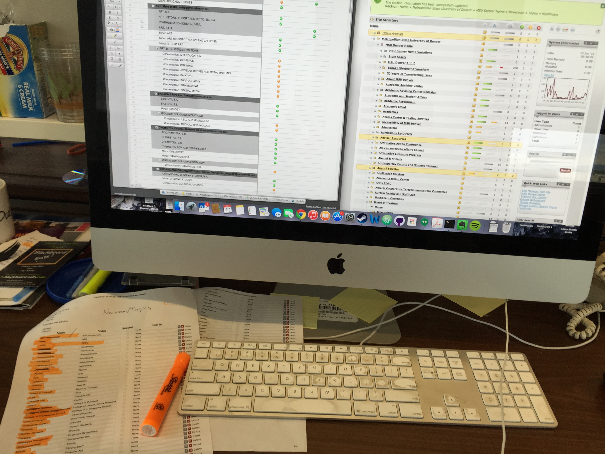
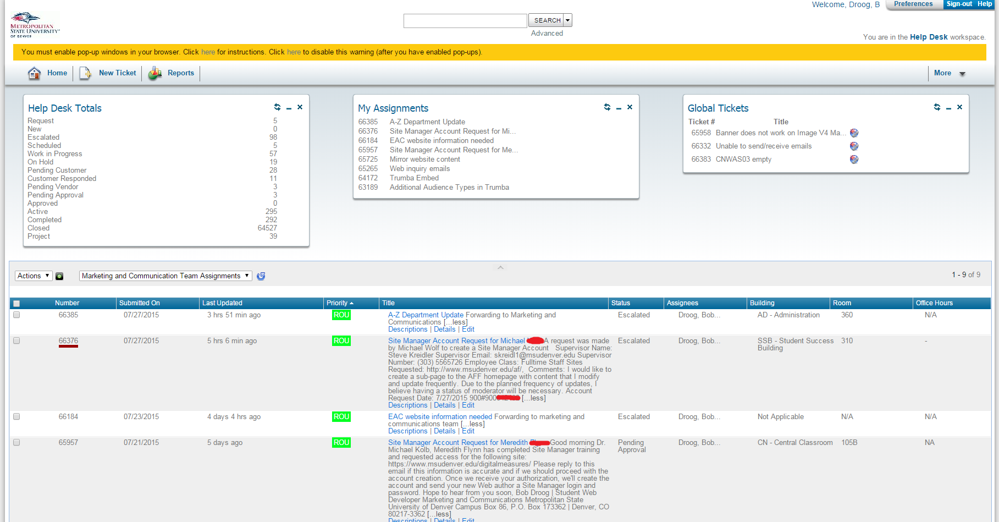

Introduction
While the digital display redesign project was my main project, I still had other duties to fulfil during the same time. This is where I learned to really focus on priorities and time management. During my self directed project there were other projects I had to assist on, there were daily things to do such as support and calendar moderation, and other small side projects that could be finished within a few hours or a day.
Weekly Meetings
During the weekly meetings on Monday mornings at 11 AM, we discussed all the projects, where we were standing, if we needed help, if new projects have come up, who does what, show progress, and check things off of the calendar. These were not only mornings where we would show things, this is also a morning where we self reflect on current events. If things are getting out of hand, others can step in and help.
Meeting on July 13, 2015 discussing items on the new student and faculty hub design.
Assisting with Projects
Sometimes when you are busy you can be stopped out of nowhere and have to give a hand to one of your colleagues because there is an error in the code that he or she can’t see. Maybe a fresh pair of eyes from someone who didn’t write any of the code you are working on can be key to fixing certain errors.
 Code of content within Site Manager.
Code of content within Site Manager.
Terminal Four: Site Manager
Terminal Four is a great tool when you are not a web developer, but when you are, you will most likely find a WCMS to be harder than just writing code. Sometimes it gives you crazy errors and then people will call you to fix it. In the next two images I am updating a table with topics. Little side projects such as these come by daily.
How you see it on the MSU Denver web page.
How you see the same page within Site Manager.
Moderating
For the University’s website (msudenver.edu) we use the calendar database trumba and I was to daily check for submissions from people on campus. Once a new submission came through I had to check it out, make sure it was selected into the right calendar, and publish it.
Content
Usually there is a person who already has content ready for the pages you build, however, sometimes there is not. This leaves only yourself left, and therefore you’re going to be adding content for hours at the time. In the photo underneath I am double checking and adding all the MSU Denver programs to our main website. You can actually see and interact with it live here.
Checking, changing, and adding content in Site Manager.
Support
My duties in support included through email, phone, 1-on-1 trainings, and through out ticket system FootPrints.
Screenshot of the FootPrints Portal.